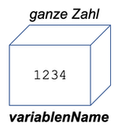
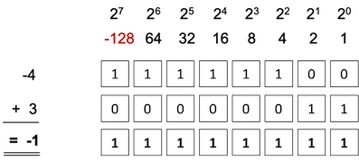
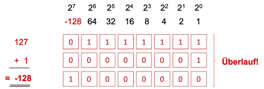

Variablen und Datentypen¶
Sowohl in dem euklidischen Algorithmus als auch bei der (3n+1)-Vermutung haben wir mit Zahlen gerechnet. Diese haben wir in Variablen gespeichert. Wir kennen Variablen bereits aus der Mathematik. Dort "speichern" wir Werte in diesen Variablen. Das gleiche passiert auch beim Programmieren.
Eine Variable kann man sich wie eine Kiste vorstellen, in die genau ein Wert passt. Diese Kiste hat einen Namen (den Namen der Variable) und in der Programmierung wird auch noch gesagt, welche Art von Wert dort hineinpasst. Man spricht auch vom Typ der Variablen oder noch besser vom Datentyp.
Eine Variable besteht also aus drei Dingen:
- dem Wert der Variablen (genau einer)
- dem Datentyp der Variablen (besteimmt den Wertebereich, also die möglichen Werte, die die Variable annehmen kann)
- dem Namen der Variablen (dafür gibt es Regeln, wie solche Bezeichner aussehen dürfen)

Das Erstellen einer Variablen (die Definition einer Variablen) besteht in der Programmierung aus zwei Schritten:
- der Variablendeklaration: in der Deklaration wird festgelegt, wie die Variable heißt und von welchem Datentyp sie ist
- der Initialisierung: bei der Initialisierung wird der Variablen ihr erster Wert zugewiesen
Damit wir einer Variablen ihren Datentyp zuweisen können, müssen wir die Datentypen zunächst kennenlernen, die eine Variable haben kann.
Datentypen in Java¶
In Java gibt es acht sogenannte primitive Datentypen. Wir bezeichnen diese primitiven Datentypen als Wertetypen. Eine Variable von einem Wertetyp kann genau einen Wert annehmen. In folgender Tabelle sind diese Datentypen aufgelistet und ihre jeweilige Bedeutung erklärt.
| Datentyp | Bedeutung |
|---|---|
int |
eine Variable vom Datentyp int kann ganzzahlige Werte speichern, also positive und negative ganze Zahlen. Die kleinste Zahl vom Typ int ist -2^31 "klein" und die größte Zahl vom Typ int ist 2^31-1 groß. int ist der Standard-Typ für ganze Zahlen in Java. int steht für integer.
|
byte |
eine Variable vom Datentyp byte kann ebenfalls ganzzahlige Werte speichern, also positive und negative ganze Zahlen. Im Gegensatz zu int ist der Wertebereich aber viel kleiner. Die kleinste byte-Zahl ist -2^7 klein und die größte byte-Zahl ist 2^7-1 groß. |
short |
eine Variable vom Datentyp short kann ebenfalls ganzzahlige Werte speichern, also positive und negative ganze Zahlen. Im Gegensatz zu int ist der Wertebereich aber viel kleiner. Im Gegensatz zu byte ist er aber größer. Die kleinste short-Zahl ist -2^15 klein und die größte short-Zahl ist 2^15-1 groß. |
long |
eine Variable vom Datentyp long kann ebenfalls ganzzahlige Werte speichern, also positive und negative ganze Zahlen. Im Gegensatz zu int ist der Wertebereich aber viel größer. long wird immer dann verwendet, wenn der Wertebereich von int nicht ausreicht, also entweder für sehr, sehr kleine oder sehr, sehr große Zahlen. Die kleinste long-Zahl ist -2^63 klein und die größte long-Zahl ist 2^63-1 groß. |
char |
Der Datenyp char steht für character. Mit diesem Datentypen werden einzelne Zeichen gespeichert. Der Datentyp char ist ebenfalls ein ganzzahliger Datentyp, nimmt aber nur positive Werte (aus dem Wertebereich 0 bis 65535 an.) Diese Werte sind Zahlenwerte, die der Codierung eines Zeichens entsprechen, z.B. dem Zeichen 'a'. Ein solches Zeichen steht immer in einfachen Hochkommata ''. |
boolean |
Der Datentyp boolean kennt nur genau zwei Werte true und false. Eine Variable vom Datentyp boolean kann also entweder genau true sein oder genau false, nichts anderes. |
double |
Der Datentyp double ist in Java der Standard-Datentyp für Gleitkommazahlen (also gebrochene Zahlen mit Komma). Die kleinste und größte double-Zahl lässt sich nicht genau bestimmen, denn das hängt von der Genauigkeit der Angabe hinter dem Komma ab. Es werden aber 64 bit verwendet, um eine double-Zahl zu speichern. |
float |
float ist neben double ein weiterer Datentyp für Gleitkommazahlen. Die Genauigkeit der Speicherung als float ist aber nicht so groß wie bei double, da float nur 32 bit zur Speicherung einer Zahl zur Verfügung hat. |
Deklaration von Variablen¶
Nun, da wir Datentypen kennen, können wir Variablen "erzeugen". Das "Erzeugen" von Variablen besteht aus zwei Schritten:
- wir vergeben einen Namen für unsere Variable und
- wir weisen der Variablen einen Datentyp zu.
Dieses Erzeugen von Variablen nennt sich Deklaration (oder Variablendeklaration). Die allgemine Syntax der Variablendeklaration ist wie folgt:
datentyp variablenName;
Wir geben also zuerst den Datentyp an, dann kommt ein Leerschritt, dann den Bezeichner für die Variable (den Namen) und dann folgt ein Semikolon, weil es sich um eine Anweisung handelt.
Beispiele:
int ganzeZahl;
int number;
long bigNumber;
byte smallNumber;
double nr1;
float nr2;
boolean condition;
char character;
Für eine Variable wird die Deklaration genau einmal durchgeführt. Danach existiert sie und sie kann auch (in Java) nicht ihren Datentypen ändern. Noch haben unsere Variablen keine Werte. Das erfolgt erst durch die Initialisierung, also die erste Wertzuweisung. Ehe wir uns das anschauen, überlegen wir uns zunächst, welche möglichen Bezeichner wir für unsere Variablennamen verwenden können.
Bezeichner¶
Wenn es um Namen geht, die wir in Java selbst vergeben wollen, dann sprechen wir von Bezeichnern. Bezeichner sind nicht nur die Namen von Variablen, sondern später auch für Methoden, Klassen, Enumerations, Exceptions und Interfaces.
Es gibt einige Regeln für Bezeichner, die wir beachten müssen:
- Bezeichner müssen mit einem Java-Buchstaben beginnen
- Bezeichner setzen sich aus Java-Buchstaben und Java-Zahlen zusammen
- Java-Buchstaben sind mehr als 'a'-'z' und 'A'-'Z'
- z.B. auch
€,£,¥,$, Umlauteä,ö,ü,ßsowie Buchstaben mit Apostrophen - Aber: wir verwenden nur die normalen Buchstaben 'a'-'z' und 'A'-'Z'!!! Alles andere führt zu Problemen
- wichtig: keine Leerzeichen, keine reservierten Schlüsselwörter und keine Sonderzeichen, wie z.B.
!,/,*,{,[,.,],} - In Java wird Groß- und Kleinschreibung unterschieden (case sensitive)!
Reservierte Schlüsselwörter sind Begriffe aus dem Java-Sprachumfang (alle kleingeschrieben)1. Dazu gehören:
abstract |
assert |
boolean |
break |
byte |
case |
catch |
char |
class |
const |
continue |
default |
do |
double |
else |
enum |
extends |
final |
finally |
float |
for |
goto |
if |
implements |
import |
instanceof |
int |
interface |
long |
native |
new |
package |
private |
protected |
public |
return |
short |
static |
strictfp |
super |
switch |
synchronized |
this |
throw |
throws |
transient |
try |
void |
volatile |
while |
Übung Bezeichner
Warum sind das keine gültigen Bezeichner in Java?
2und2macht4classHose gewaschenHurtignull
Konventionen¶
Wir wissen jetzt, was gültige Bezeichner sind und was ungültige. Darüber hinaus gibt es aber auch Vereinbarungen, die helfen, einen besser verständlichen und konsistenteren Code zu schreiben:
- wir vergeben nur "sprechende" Namen, d.h. man erkennt bereits am Bezeichner, wozu die Variable dient, z.B.
sum,input,checkIfEmptyusw. - Variablennamen beginnen stets mit einem Kleinbuchstaben (einzige Ausnahmen sind Konstanten, diese schreiben wir vollständig groß, d.h. aus lauter Großbuchstaben)
- Methodennamen beginnen ebenfalls mit einem Kleinbuchstaben, Klassen und Interfaces beginnen stets mit einem Großbuchstaben
- verwenden die sogenannte camelCaseSchreibweise. Da keine Leerzeichen erlaubt sind, wir aber sprechende Namen haben wollen, die aus mehreren Wörtern bestehen können, schreiben wir den Beginn eines neuen Wortes immer groß (außer ganz am Anfang, denn Methoden- und Variablennamen beginnen ja mit einem Kleinbuchstaben.)
Initialisierung von Variablen¶
Nach der Deklaration einer Variablen existiert diese zwar, sie hat jedoch noch keinen Wert. Wir wollen sicherstellen, dass Variablen immer einen Wert haben. Du weisen wir den Variablen direkt nach der Deklaration einen Wert zu. Die erstmalige Wertzuweisung einer Variablen wird Initialisierung genannt.
Der Wertzuweisungsoperator =¶
Um einer Variablen einen Wert zuzuweisen, wird der Wertzuweisungsoperator verwendet. Dieser ist ein eifaches Gleichheitszeichen =. Die Syntax der Wertzuweisung ist wie folgt:
variablenName = wert;
Auf der linken Seite steht also immer die Variable und auf der rechten Seite der Wert. Auch hier muss am Ende wieder zwingend das Seikolon stehen, denn es handelt sich um eine Anweisung. Wichtig ist, dass der Wert dem Datentyp der Variablen entspricht!
Wir geben einige Beispiele für Variablen an, die wir oben deklariert hatten:
ganzeZahl = 5; // int
number = -1234; // int
bigNumber = 12345678; // long
nr1 = 6.54321; // double
condition = true; // boolean
character = 'a'; // char
Nachdem einer Zahl mithilfe des Wertzuweisungsoperators ein Wert zugewiesen wurde, behält die Variable den Wert so lange bis ihr ein neuer Wert (mithilfe des Wertzuweisungsoperators) zugewiesen wird. Einer Variablen kann beliebig oft ein neuer Wert zugewiesen werden.
Deklaration und Initialisierung in einem Schritt¶
Da wir möchten, dass eine Variable sofort nach ihrer Deklaration einen Wert zugewiesen bekommt, ist es üblich, die Deklaration und die Initialisierung in einem Schritt, d.h. durch eine Anweisung durchzuführen. Die Syntax der kombinierten Anweisung (Deklaration und INitialisierung) ist wie folgt:
datentyp variablenName = wert;
int ganzeZahl = 5;
int number = -1234;
long bigNumber = 12345678;
double nr1 = 6.54321;
boolean condition = true;
char character = 'a';
Beachte
Wie bereits erwähnt, kann eine Variable genau ein Mal deklariert, ihr aber beliebig oft ein neuer Wert zugewiesen werden. Angenommen, Sie wollen der Variablen ganzeZahl einen neuen Wert zuweisen, dann schreiben Sie die Anweisung ganzeZahl = 6;. Sie dürfen auf keinen Fall int ganzeZahl = 6; schreiben, denn dann würden Sie ja versuchen, die Variable ganzeZahl erneut zu deklarieren. Diese existiert aber bereits. Sie bekommen einen Compilerfehler und können ihr Programm gar nicht erst übersetzen.
Details zu Datentypen¶
Wie wir bereits bei der Vorstellung der primitiven Datentypen erwähnt haben, ist für jeden Datentyp eine gewisse Speichergröße reserviert. Hier noch einmal die Größe der primitiven Datentypen:
| Datentyp | Größe | Wertebereich |
|---|---|---|
boolean |
1 Byte2 | true / false |
char |
16 bit | 0 ... 65.535 (z.B. 'A') |
byte |
8 bit | -128 ... 127 |
short |
16 bit | -32.768 ... 32.767 |
int |
32 bit | -2.147.483.648 ... 2.147.483.647 |
long |
64 bit | -2^63 ... 2^63-1 |
float |
32 bit | +/-1,4E-45 ... +/-3,4E+38 |
double |
64 bit | +/-4,9E-324 ... +/-1,7E+308 |
Wir schauen uns jetzt noch einige interssante Details zu den Datentypen an.
Ganzzahlige Datentypen int, long, short, byte¶
Eine ganze Zahl in einem Java-Programm ist vom Typ int. Dieser Datentyp ist der Standard-Datentyp für ganze Zahlen. Ganze Zahlen werden intern im sogenannten Zweierkomplement dargestellt. Wir schauen uns diese Darstellung am Beispiel des Datentyps byte (der 8 bit groß ist) einmal genauer an. In der folgenden Darstellung steht die Bedeutung der Position der einzelnen bits ganz oben, beginnend mit der 1 (2^0) auf der rechten Seite ("kleinstes" bit) bis hin zu 2^7 auf der linken Seite ("größtest" bit). Beim Zweierkomplement entspricht diese höchste Position jedoch nicht der 128, sondern der -128. Dies hat drei Vorteile
- es wird nicht ein ganzes bit dafür verwendet, um zu unterscheiden, ob es sich um eine positive oder negative Zahl handelt
- die
0kommt nicht 2x vor (1000 0000und0000 0000wäre jeweils0, wenn das führende bit darüber entscheiden würde, ob die Zahl positiv oder negativ ist) - sowohl die Addition als auch die Subtraktion geht einfacher

Die Abbildung zeigt in den oberen drei Zeilen die interne Darstellung von -128, 127 und 0. In den drei Zeilen darunter ist dargestellt, wie z.B. die Zahlen 85, -43 und -85 als Zweierkomplement repräsentiert werden.
Die folgende Abbildung zeigt die Addition (und somit auch die Subtraktion) zweier Zahlen im Zweierkomplement. Dargestellt sidn die Repräsentationen von -4 und 3 als Zweierkomplement. Es wird die Addition der beiden Zahlen gezeigt.

Da die Werte alle einen begrenzten Wertebereich haben, kann es zu einem Wertebereichsüberlauf kommen. Ein solcher Überlauf ist in der folgenden Abbildung dargestellt. Im Datentyp byte ist 127 die größte positive Zahl. Die Abbildung verdeutlicht, was passiert, wenn zu dieser größten Zahl eine 1 hinzuaddiert wird.

Beachten Sie, dass ein solcher Überlauf unbemerkt passiert. Das bedeutet, dass Sie weder einen Fehler noch eine Warnung erhalten. Sie müssen sich also immer gut überlegen, ob ein solcher Überlauf bei Ihren Werten passieren kann. Wenn ja, dann sollten Sie zum nächstgrößeren Datentypen wechseln, also z.B. von int nach long.
Übung Zweierkomplement
- Warum ist
1111 1111als Zweierkomplement im Datentypbytedie Dezimalzahl-1? - Wie ist die Repräsentation der Zahlen
-99und99als Zweierkomplement im Datentypbyte? - Was ist das Ergebnis der Rechnung
2.147.483.647 + 1im Datentypintund warum?
Initialisierung von long-Variablen.¶
Eine ganze Zahl als Literal, also als alleinstehender Wert ist vom Typ int. Wenn wir folgende kombinierte Deklaration und INitialisierung betrachten:
long bigNumber = 12345678;
dann stellen wir fest, dass die Variable bigNumber auf der linken Seite des Wertzuweisungsoperators vom Typ long ist, die Zahl 12345678 aber vom Typ int. Wir werden später noch auf solche Typkonvertierung zu sprechen kommen. Es sei hier jedoch bereits angemerkt, dass man eine ganze Zahl auch um das Postfix L ergänzen kann3 - mit der Wirkung, dass die Zahl dann nicht mehr vom Typ int, sondern vom Typ long ist.
Die "richtige" Initialisierung sieht so aus:
long bigNumber = 12345678L;
Es ist nur in wenigen Fällen wirklich erforderlich, das L an die Zahl zu hängen, wenn wir eine long-Variable initialisieren. Warum das so ist, werden wir kennenlernen, wenn wir uns über * Typkonvertierung* Gedanken machen. Trotzdem sei hier schonmal erwähnt, dass diese Deklaration und Initailisierung kein Problem ist
long bigNumber = 2147483647;
aber hier bekommen wir einen Fehler und können das Programm gar nicht übersetzen:
long bigNumber = 2147483648;
Warum könnte das wohl so sein? Wenn wir es "richtig" machen, also mit angehängtem L, dann ist auch wieder alles in Ordnung und das Programm lässt sich compilieren:
long bigNumber = 2147483648L;
In unseren Programmen werden wir zu 99% den Datentyp int für ganzzahlige Werte verwenden und zu 1% long. Die anderen ganzzahligen Datentypen byte und short braucht man eigentlich gar nicht mehr, da wir keinen Wert mehr darauf legen müssen, Arbeitsspeicher zu sparen.
char¶
Der Datentyp char ist für das Speichern von Zeichen vorgesehen. Es handelt sich um einen ganzzahligen Datentypen. Mit den ersten Computern stellte sich die Frage, wie Zeichen (also Ziffern und Buchstaben) intern codiert werden können. Es hat sich dann zunächst die Zeichencodierung des American Standard Code for Information Interchange (ASCII) durchgesetzt, bei der 7 Bit (=128 Zeichen) dazu verwendet wurden, die wichtigsten Zeichen zu kodieren. Neben einigen Steuerzeichen (die ersten 33 "Zeichen", z.B. Zeilenvorschub, ESC-Zeichen) wurden z.B. folgende Zeichen wie folgt kodiert:
| Dezimalzahl | Zeichen | Dezimalzahl | Zeichen | Dezimalzahl | Zeichen |
|---|---|---|---|---|---|
| 33 | ! |
47 | / |
61 | = |
| 34 | "" |
48 | 0 |
62 | > |
| 35 | # |
49 | 1 |
63 | ? |
| 36 | $ |
50 | 2 |
64 | @ |
| 37 | % |
51 | 3 |
65 | A |
| 38 | & |
52 | 4 |
66 | B |
| 39 | ' |
53 | 5 |
67 | C |
| 40 | ( |
54 | 6 |
68 | D |
| 41 | ) |
55 | 7 |
69 | E |
| 42 | * |
56 | 8 |
70 | F |
| 43 | + |
57 | 9 |
71 | G |
| 44 | , |
58 | : |
72 | H |
| 45 | - |
59 | ; |
73 | I |
| 46 | . |
60 | < |
74 | J |
| Dezimalzahl | Zeichen | Dezimalzahl | Zeichen | Dezimalzahl | Zeichen |
|---|---|---|---|---|---|
| 75 | K |
89 | Y |
103 | g |
| 76 | L |
90 | Z |
104 | h |
| 77 | M |
91 | [ |
105 | i |
| 78 | N |
92 | \ |
106 | j |
| 79 | O |
93 | ] |
107 | k |
| 80 | P |
94 | ^ |
108 | l |
| 81 | Q |
95 | _ |
109 | m |
| 82 | R |
96 | ``` | 110 | n |
| 83 | S |
97 | a |
111 | o |
| 84 | T |
98 | b |
112 | p |
| 85 | U |
99 | c |
113 | q |
| 86 | V |
100 | d |
114 | r |
| 87 | W |
101 | e |
115 | s |
| 88 | X |
102 | f |
116 | t |
| Dezimalzahl | Zeichen | Dezimalzahl | Zeichen | Dezimalzahl | Zeichen |
|---|---|---|---|---|---|
| 117 | u |
121 | y |
125 | } |
| 118 | v |
122 | z |
126 | ~ |
| 119 | w |
123 | { |
127 | DEL |
| 120 | x |
124 | | |
Diese Zeichenkodierung erklärt, warum es sich bei char um einen ganzzahligen Typ handelt. Anstelle eines Zeichens, welches immer in einfachen Hochkommata '' angegeben werden muss, kann auch der ASCII-Code als Zahl verwendet werden. Folgende Beispiele zeigen dies:
char c1 = 'a';
System.out.println(c1); // a
char c2 = 97;
System.out.println(c2); // a
char c3 ='`';
c3++;
System.out.println(c3); // a
Die 128 verschiedenen Zeichen genügten natürlich schnell nicht mehr und es wurden deutlich größere Kodierungstabellen entwickelt. Ein de-facto Standard ist UTF-8, welcher Bytes (also 8 Bit) zur Kodierung der Zeichen verwendet. Die ersten 128 Zeichen sind dabei mit dem ASCII-Code identisch. Im UTF-8 können aber mehrere Bytes hintereinander geschrieben werden und ermöglichen so einen beliebig großen Kodierungsraum. Der Datentyp char ist 16 Bit groß, kann also 2 Byte große Kodierungsräume darstellen (65 536 verschiedene Zeichen). Eine UTF-8-Tabelle finden Sie z.B. hier. Die linke Spalte in dieser Tabelle zeigt den Unicode. Dieser kann auch in Java (in leicht abgewandelter Form) verwendet werden. Scrollen Sie in der Tabelle ein wenig bis zur Position U+00A9 herunter. Dort sehen Sie z.B. die Codierung des ©-Copyright-Zeichens. In Java kann dieser Code wie folgt verwendet werden:
char u1 = '\u00a9';
System.out.println(u1); // copyright-Zeichen
char u2 = '\u00b0';
System.out.println(u2); // Grad-Zeichen
char u3 = '\u00bd';
System.out.println(u3); // 1/2-Zeichen
Gleitkomma-Datentypen double, float¶
Eine Gleitkomma-Zahl (also eine Zahl mit einem Punkt, z.B. 5.0 oder -1.2345) in einem Java-Programm ist vom Typ double. Dieser Datentyp ist der Standard-Datentyp für Gleitkomma-Zahlen. Der Wertebereich der Datentypen double und float lässt sich nicht so leicht angeben, denn entweder wird relativ viel "Speicher" für die Genauigkeit verwendet (für die Anzahl der Nachkommastellen, z.B. 0.123456789) oder für die Vorkommastellen (z.B. 987654321.0). Generell ist der Wertebereich (die Genauigkeit) bei double viel höher, denn für eine Variable vom Typ double werden 64 bit reserviert, während eine Variable vom Typ float nur 32 bit groß ist. Bei float beschränkt sich die Genauigkeit auf ca. 7 signifikante Stellen (Nachkommastellen), während es bei double ca. 17 signifikante Stellen sind.
float floatNumber = 1.0f/3.0f;
System.out.println(floatNumber); // 0.33333334
Im obigen Beispiel wird mithilfe von float der Bruch 1/3 ausgerechnet. Zwei Sachen sind zu beachten
- Wie wir das schon beim Datentyp
longgesehen haben, gibt es auch für Gleitkommazahlen ein Postfix, hierf, um zu sagen, dass eine Zahl vom Typfloatsein soll. Ohne dasfwäre sie vom Typdoubleund wir würden sogar einen Compilerfehler erhalten, wenn wir dasfam Ende der Zahl nicht angeben würden. Hier ist es also wichtig, bei der Wertzuweisung anzugeben, dass die Zahl vom Typfloatsein soll - nämlcih durch die Angabe vonf(Fginge auch). - Die Genauigkeit bei
floatist nicht sehr hoch.1/3imfloat-Wertebereich ergibt0.33333334. Schauen wir uns das gleiche Beispiel mitdoublean:
double doubleNumber = 1.0/3.0;
System.out.println(doubleNumber); // 0.3333333333333333
Erstens hat der double-Wert deutlich mehr Nachkommastellen (16 statt 8 bei float) und zweitens ist der Wert korrekter.
Wir merken uns:
- wir sollten
floateher nicht verwenden, wenn wir Wert auf Genauigkeit legen, - wenn wir
floatverwenden, dann müssen wir beim Initialisieren und bei allen Wertezuweisungen darauf achten, dass wir an die Gleikommazahl einfanhängen, da es sich ansonsten um eine Gleitkommazahl vom Typdoublehandelt, doubleist der Standardtyp für Gleikommazahlen und wenn eine Gleitkommazahl im Programmcode vorkommt, dann handelt es sich um eine Zahl vom Typdouble.
Success
Wir können nun Variablen deklarieren und initialisieren. Wir kennen alle acht primitiven Datentypen. Wir nennen diese Datentypen Wertetypen. Wir wissen, dass eine ganze Zahl im Java-Programm vom Typ int ist und eine Gleikommazahl vom Typ double. Wir kennen die interne Darstellung von ganzen Zahlen und wir wissen über die Kodierung von Zeichen Bescheid. Der datentyp char ist ein ganzzahliger Typ, obwohl er für das Speichern von Zeichen zuständig ist. Dies liegt an der Kodierung der Zeichen als ganze Zahlen. Der Wertzuweisungsoperator ist =. Wenn einer Variablen ein Wert zugewiesen werden soll, dann muss die Variablen links stehen, der Wertuweisungsoperator in der Mitte und rechts der Wert.
-
constundgotogehören eigentlich gar nicht zum Sprachumfang von Java und sind aber trotzdem reservierte Schlüsselwörter. ↩ -
Tatsächlich ist die Größe eines
booleangar nicht genau definiert (siehe hier). man braucht ja eigentlich nur ein bit. Man liest aber sehr häufig davon, dass einer Variablen vom Typbooleanein ganzes Byte reserviert wird. ↩ -
Man könnte auch nit dem kleinen Buchstaben
lergänzen, das macht man aber nicht, weil die Verwechselungsgefahr mit der1zu groß ist. ↩